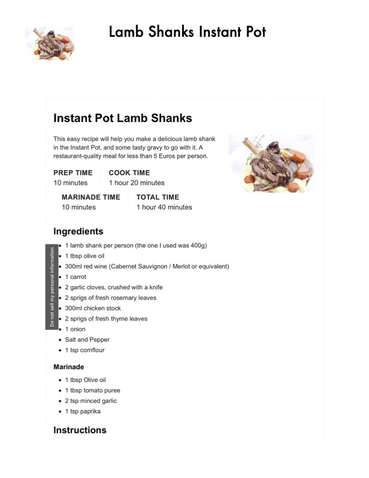

Instant Pot Lamb Shanks

Original cookbook page 304
Restaurant-quality lamb shank braised in the Instant Pot with red wine (Cabernet Sauvignon/Merlot), chicken stock, rosemary, and thyme. A meal costing less than 5 Euros per person.
Prep: 10 minutes • Cook: 1 hour 20 minutes • Total: 1 hour 40 minutes (including marinade)
Ingredients
- 4 lamb shanks
- Paprika for marinade
- Tomato paste for marinade
- Red wine (Cabernet Sauvignon or Merlot)
- Chicken stock
- Fresh rosemary
- Fresh thyme
- 1 large carrot, diced
- 1 onion, diced
- 4 cloves garlic
- Cornflour for thickening
- Butter for finishing gravy
- Salt and pepper to taste
- Mashed potatoes for serving
Instructions
- Coat lamb shanks in a paprika-tomato marinade and let sit for 10 minutes.
- Using the Instant Pot sauté function, brown the marinated lamb shanks on all sides until well-seared.
- Add diced carrot, onion, and garlic to the pot. Sauté briefly.
- Add red wine, chicken stock, rosemary, and thyme. The liquid should partially cover the lamb shanks.
- Secure the Instant Pot lid and cook on high pressure for 60 minutes. Allow natural pressure release.
- Remove lamb shanks and keep warm. Strain the cooking liquid.
- In a saucepan, thicken the strained liquid with cornflour and finish with butter to create a glossy gravy. Season with salt and pepper.
- Serve lamb shanks with the gravy over mashed potatoes.
Recipe #304 from collection